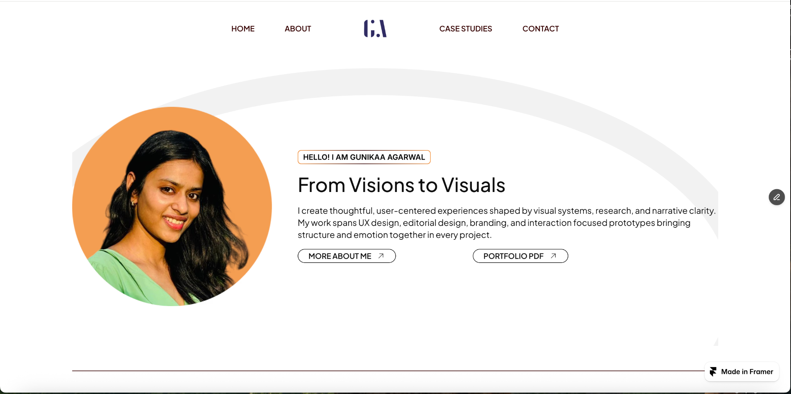
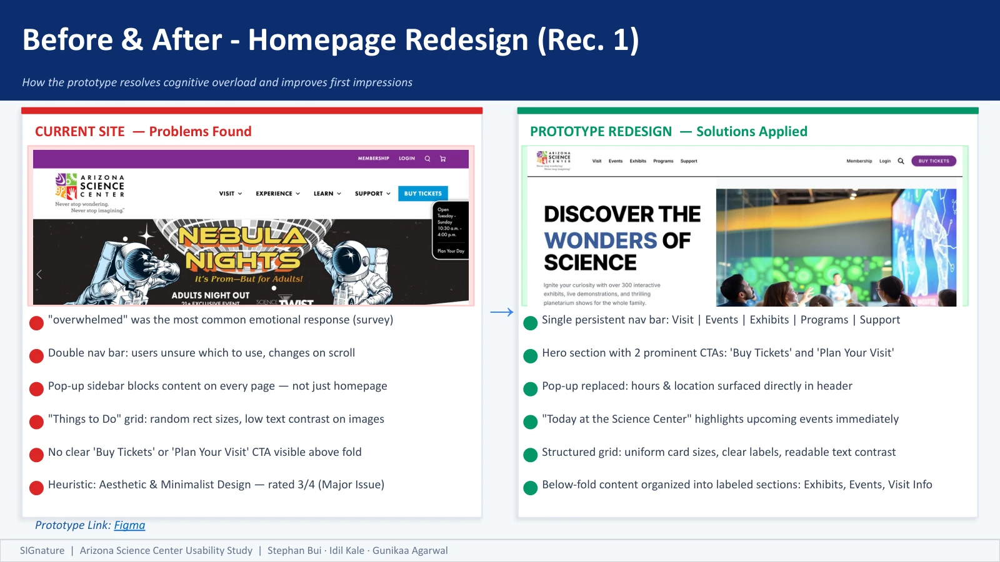
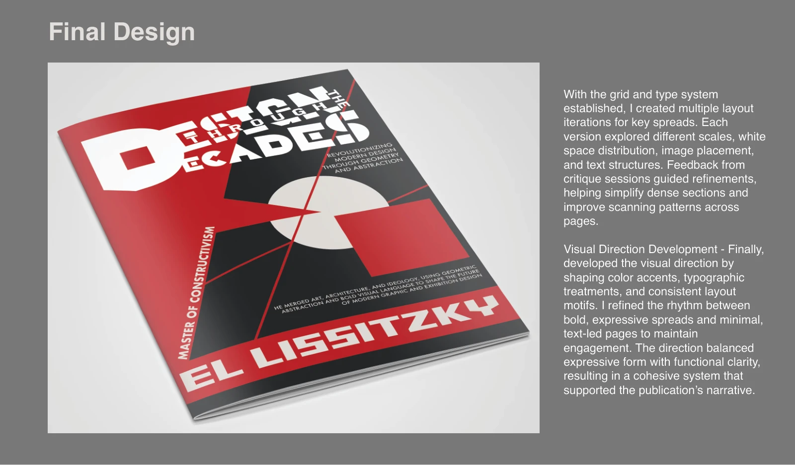
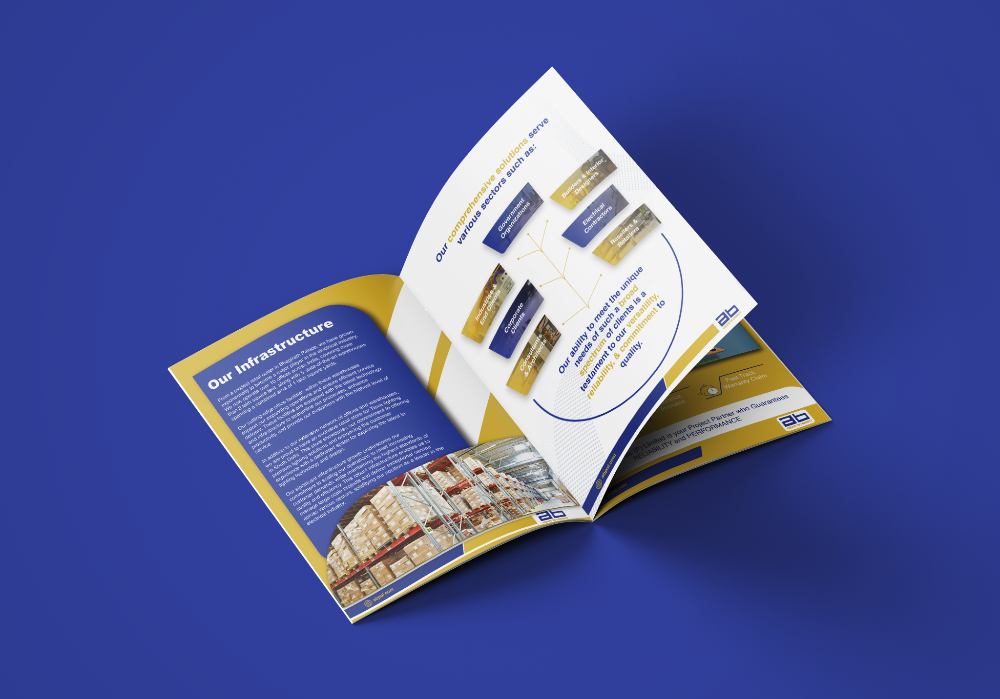
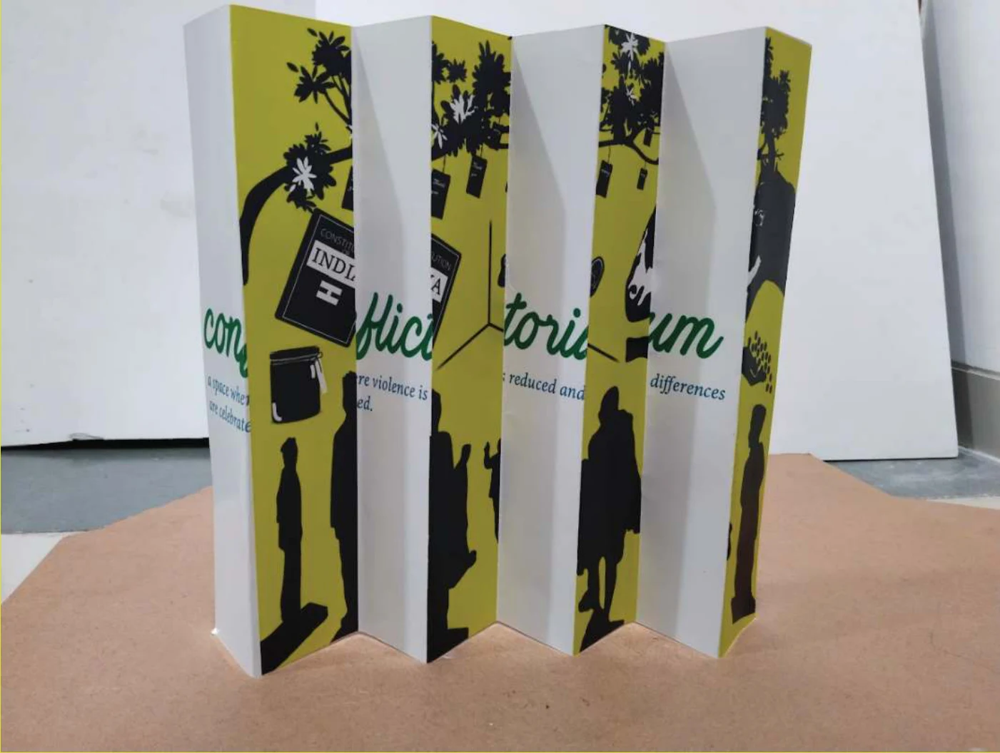
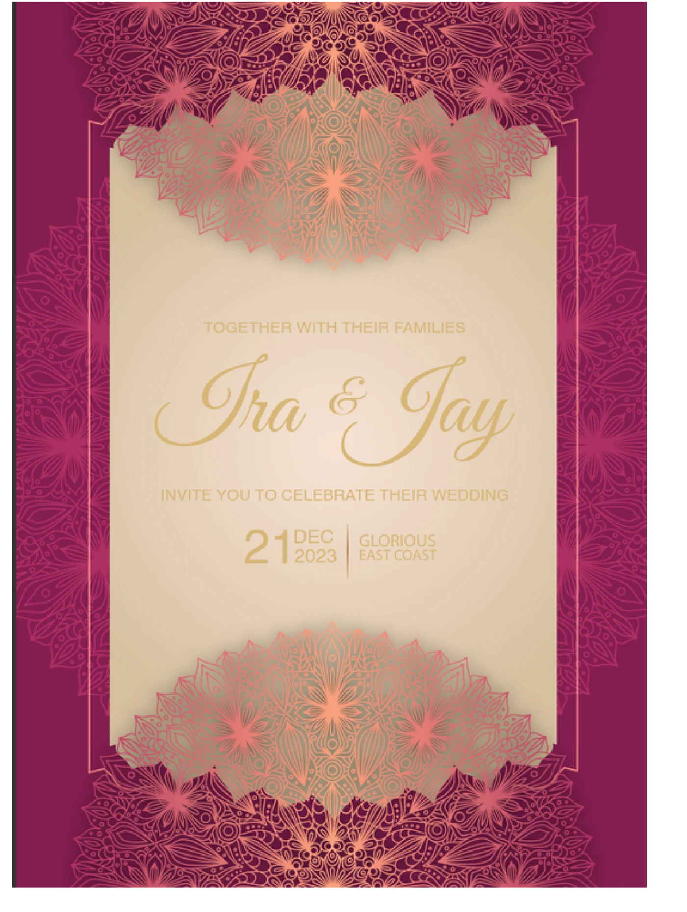

01Explore project
01Explore project UX/UI · B2B · Design system
ABPAL
Turning a complex electrical-products catalogue into a clear, structured web experience.
UX/UI & COMMUNICATION DESIGNER
I’m Gunikaa Agarwal. I turn research and visual thinking into digital experiences that feel clear, considered, and easy to use.
MS User Experience · Arizona State University

01 / SELECTED WORK
A selection of digital and visual experiences.
01Explore project UX/UI · B2B · Design system
Turning a complex electrical-products catalogue into a clear, structured web experience.
 02Explore project
02Explore project UX/UI · Healthcare · Brand system
A research-led experience that brings clarity and reassurance to healthcare decisions.

03Explore projectUX research · Usability evaluation · Team project
A mixed-method UX evaluation translating visitor friction into clearer navigation, event discovery, and ticket-purchase flows.

04Explore projectResearch-led editorial · Typography
An editorial exploration of El Lissitzky, geometric abstraction, and contemporary visual communication.

05Explore projectEditorial design · B2B · Catalog
A 67-page corporate and product catalog connecting ABPAL’s company story, brands, product ranges, and service information.
 06Explore project
06Explore project Brand identity · Visual system
A visual identity connecting the region’s architecture, sun, and golden dunes.
 07Explore project
07Explore project Packaging · Structural design
Four fold-out compartments turn a compact dry-fruit gift box into a serving tray.

08Explore projectEnvironmental graphics · Installation
An environmental-graphics concept that changes what viewers see as they move around it.
 09Explore project
09Explore project Logo design · Wellness branding
A flowing wordmark and seven-color motif for a yoga and wellness center.
 10Explore project
10Explore project UX research · Photography portfolio
A content-first portfolio shaped around the creator, viewers, and recruiters.
 11Explore project
11Explore project Editorial · Magazine design
A fashion magazine exploration balancing photography, expressive headlines, and a three-column grid.
 12Explore project
12Explore project Editorial · Coffee-table book
A photography-led coffee-table book about Busan’s culture, coastline, food, and everyday experiences.

13Explore projectAugmented reality · Experience design
A printed wedding invitation connects guests to location, outfit guidance, occasion dates, and a gallery.
 14Explore project
14Explore project UI design · Service concept
A tabletop ordering concept connecting the physical dining experience with a clear digital flow.
 15Explore project
15Explore project Typography · Visual exploration
Typographic compositions exploring emphasis, contrast, and the visual rhythm of quotations.
02 / BEHIND THE WORK
Hover to explore · Tap to bring forward
I’m Gunikaa, a UX/UI and Communication Designer and User Experience graduate student at Arizona State University. I turn complex ideas into clear, engaging digital experiences, guided by user research, usability, and accessibility.
With a background in Communication Design, my work spans branding, marketing campaigns, and digital design. I bring together visual storytelling, typography, and layout with wireframing, prototyping, and interaction design to create cohesive experiences.
I’m curious about how products work—and why some take five clicks when one should do. That curiosity shapes my user-centered approach and the design systems I build.
Beyond design, you’ll find me exploring museums and historical places or watching a good movie. Even my downtime involves stories.
Open to full-time opportunities starting June 2027. Let’s create something thoughtful together!
03 / MY BACKGROUND
Arizona State University · Azcane, Global Futures
Apr 2026 – Present
Literature reviews, research synthesis, stakeholder-session insights, and evidence-based visual communication for carbon-neutral Arizona initiatives.
Arizona State University · EOSS
May 2026 – Present
Brand-aligned digital and print campaigns, accessible layouts, presentations, and event collateral.
Delve Intermodal
Jun 2026 – Aug 2026
End-to-end website redesign for an intermodal logistics carrier, from heuristic evaluation, competitive analysis, and stakeholder interviews to high-fidelity prototypes.
Crrescita · Intern to full-time
Dec 2023 – Mar 2025
End-to-end UX across healthcare, electrical, and e-commerce platforms; 40+ user interviews and usability tests. Reported outcomes across the role: 58% improvement in cross-team consistency through reusable design systems, and 56% improvement in usability and task completion through testing, behavioral analysis, and journey mapping.
Nutrabay
Feb 2024 – Apr 2024
Digital assets and UI touchpoints shaped by brand guidelines, user behavior, and clear visual hierarchy.
Arizona State University, United States
2025 – 2027
CGPA: 4.00
Anant National University, India
2020 – 2024
Minor in Moving Images · CGPA: 3.37
CITI Program
Google (Coursera)
04 / WHAT I BRING
05 / LET’S CONNECT
I’d love to hear about it.
gunikaa.agarwal29@gmail.com